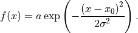
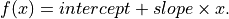
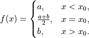
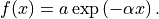
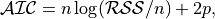
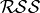
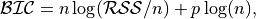
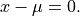

anko package¶
Submodules¶
anko.anomaly_detector module¶
-
class
anko.anomaly_detector.AnomalyDetector(t, series)[source]¶ Bases:
object-
apply_policies¶ Policies for AnomalyDetector to follow with.
- Parameters
scaleless_t (bool, default True) – If True, use numpy.arange(1, len(t)+1) for the fitting.
boxcox (bool, default False) – If True, perform log-boxcox transformation before carrying out normal test. This will result in higher chances on selecting normal distribution method.
z_normalization (bool, default True) – If True, apply z-score normalization to fitting residual. This parameter is stringly advised to define threshold values in AnomalyDetector.thres_params scalelessly.
info_criterion (str, default 'AIC') – Information criterion for selecting fitting ansatzs, allowed fields are ‘AIC’ or ‘BIC’.
abs_residual (bool, default False) – If True, return absolute value of residual.
full_return (bool, default True) – If True, return named dictionary for fitting parameters, eilse return list of fitting parameters in the order that can be found in AnomalyDetector.models.
min_sample_size (int, default 10) – Minimum number of data samples to execute AnomalyDetector. If provided number of samples is less than this attribute, raise ValueError.
- Type
-
thres_params¶ Threshold values for selecting anomalous data.
- Parameters
p_normality (float, default 5e-3) – Threshold value for selecting normal distribution, in accordance with the p value of normal test.
normal_err (float, default 75) – Threshold value for selecting normal distribution, in case that fitting on normal distribution failed and unconverged.
normal_std_width (float, default 1.5) – Threshold width of standard deviation, data points exceed this param will be regarded as anomalous.
normal_std_err (float, default 1e+1) – Maximum tolerence of convergence. If fitting error is larger than this param, pass ConvergenceError to CheckResult.extra_info.
linregress_std_err (float, default 1e+1) – Maximum tolerence of convergence. If fitting error is larger than this param, pass ConvergenceError to CheckResult.extra_info.
linregress_res (float, default 2) – Threshold value of residual for linear regression, data points exceed this param will be regarded as anomalous.
step_func_err (float, default 1e+1) – Maximum tolerence of convergence. If fitting error is larger than this param, pass ConvergenceError to CheckResult.extra_info.
step_func_res (float, default 2.5) – Threshold value of residual for general sign function, data points exceed this param will be regarded as anomalous.
exp_decay_err (float, default 1e+1) – Maximum tolerence of convergence. If fitting error is larger than this param, pass ConvergenceError to CheckResult.extra_info.
exp_decay_res (float, default 2) – Threshold value of residual for exponential function, data points exceed this param will be regarded as anomalous.
skewness (float, default 20) – Threshold value of skewness. If skewness of data distribution is larger than this param, pass Warning to CheckResult.extra_info.
min_res (float, default 10) – Absolute minimum value of residul, residuals that are smaller than this param will be masked into zero. This action is always performed before z-score normalizing the residual.
- Type
-
models¶ Models that can be considered by AnomalyDetector.
- Gaussian (Normal) Distribution

- Linear Regression

- Step Function

- Exponential Decay

- Parameters
gaussian (bool, default True) – Gaussian (normal) distribution. Define in stats_util.normal_distr.
half_gaussian (bool, default False) – In development, unavailable for now.
linear_regression (bool, default True) – Linear ansatz.
step_func (bool, default True) – Generalize Heaviside step function. Define in stats_util.general_sgn.
exp_decay (bool, default True) – Exponential function. Define in stats_util.exp_decay.
- Type
-
anko.stats_util module¶
-
anko.stats_util.AIC_score(y: numpy.ndarray, y_predict: numpy.ndarray, p: int) → float[source]¶ Compute Akaike information criterion for model selection.

where  is the residual sum of squares, and
 is the number of data samples.
is the number of data samples.
-
anko.stats_util.BIC_score(y: numpy.ndarray, y_predict: numpy.ndarray, p: int) → float[source]¶ Compute Bayesian information criterion for model selection.

where is the residual sum of squares, and
is the number of data samples.
-
anko.stats_util.data_is_linear(x: numpy.ndarray, y: numpy.ndarray, std_err_th: float = 0.01) → bool[source]¶ Check whether the data (x, y) is linear under the given tolerance.
This will perform a linear regression fitting.
-
anko.stats_util.discontinuous_idx(x: numpy.ndarray, std_width: int = 1)[source]¶ Compute derivative of input array x, and organize the result into z-score standardized formulation. Once this analysis is done, normalized results are masked for those magnitudes that are smaller than std_width, in order to ignore noises.
- Parameters
x (numpy.ndarray) – Input Values.
std_width (int) – Threshold values for masking noises.
- Returns
idx (numpy.ndarray): Indices of discontinuous points in input array x.
- Return type
numpy.ndarray
-
anko.stats_util.exp_decay(x: numpy.ndarray, a: float, alpha: float) → numpy.ndarray[source]¶ Calculate the exponential function of input array x. Note that domain of x >= 0.
-
anko.stats_util.exp_decay_fit(x: numpy.ndarray, y: numpy.ndarray, mode: str = 'log-linregress', maxfev: int = 2000, bounds=[-1e-06, 1000000.0])[source]¶ - Parameters
- Returns
popt (numpy.ndarray): perr (numpy.ndarray):
- Return type
-
anko.stats_util.fitting_residual(x: numpy.ndarray, y: numpy.ndarray, func, args, mask_min: float = None, standardized: bool = False) → numpy.ndarray[source]¶ Compute the fitting residual.
- Parameters
x (numpy.ndarray) – x coordinate of input data points.
y (numpy.ndarray) – y coordinate of input data points.
func (callable) – Fitting function.
args (numpy.ndarray) – Best estimated arguments of fitting function.
mask_min (float, optional) – If not None, mask resuduals that are smaller than mask_min to zero. This is always performed before standardization.
standardized (bool, optional) – Standardize residual to z-score formalism.
- Returns
res (numpy.ndarray): Residual of each corresponding data points (x, y).
- Return type
numpy.ndarray
-
anko.stats_util.flat_histogram(x: numpy.ndarray)[source]¶ Deprecating…
Manually assign parameters of Gaussian distrinution if the given histogram is too flat.
In this senario the histogram of data is regarded as a local segment of a larger normal-distribution-like histogram, with standard deviation which exceeds the current consideration of domain.
- Parameters of Gaussian distribution are assigned as following:
Number of appearance of mode as normalization constant, a.
Mode of data x as mean, x0.
Standard deviation is set to infinity (numpy.inf).
- Parameters
x (numpy.ndarray) – Input values.
- Returns
- popt (numpy.ndarray):
Assigned values for Gaussian distribution.
- perr (numpy.ndarray):
Errors are set to zero.
- Return type
-
anko.stats_util.gaussian_fit(x: numpy.ndarray, binning: str = 'auto', half: str = None, maxfev: int = 2000, bounds=[0, 1000000.0])[source]¶ Fitting the Gaussian (normal) distribution for input data x.
- Parameters
- Returns
- popt (numpy.ndarray):
Estimate value of a, x0 and sigma of Gaussian distribution.
- perr (numpy.ndarray):
Error of popt. Defined by the square of diagonal element of covariance matrix.
- Return type
-
anko.stats_util.general_sgn(x: numpy.ndarray, a: float, b: float, x0: float) → numpy.ndarray[source]¶ Calculate the generalize sign function of input array x.
-
anko.stats_util.general_sgn_fit(x: numpy.ndarray, y: numpy.ndarray, three_stair: bool = False, maxfev: int = 2000, bounds=[0, 1000000.0])[source]¶ Fitting generalize sign function for input data (x, y).
- Parameters
- Returns
popt (numpy.ndarray): perr (numpy.ndarray):
- Return type
-
anko.stats_util.get_histogram(x: numpy.ndarray, binning: str = 'auto')[source]¶ Return the corresponding histogram of the data x. This will perform binning on data.
- Parameters
x (numpy.ndarray) – One-dimensional array of data.
binning (str, optional) – Binning methods, default ‘auto’. If None, return the naive counting number of appearence without binning as hist, else please refer to numpy.histogram_bin_edges for further binning methods.
- Returns
- bins (numpy.ndarray):
Center position of bins.
- hist (numpy.ndarray):
Histogram of x, with same size as bins.
- Return type
-
anko.stats_util.is_oscillating(x: numpy.ndarray, osci_freq_th: float = 0.3) → bool[source]¶ Determine whether the input array x is oscillating over its mean with frequency larger than osci_freq_th.
This is equivalent to find the number of solutions of the following equation

-
anko.stats_util.left_half_normal_distr(x: numpy.ndarray, a: float, x0: float, sigma: float) → numpy.ndarray[source]¶ Calculate left-side half normal distribution of input array x.
-
anko.stats_util.linear_regression(x: numpy.ndarray, y: numpy.ndarray)[source]¶ Fitting linear ansatz for input data (x, y).
- Parameters
x (numpy.ndarray) – x coordinate of input data points.
y (numpy.ndarray) – y coordinate of input data points.
- Returns
- r_sq (float):
Coefficient of determination.
- intercept (float):
Intercept of the regression line.
- slope (float):
Slope of the regression line.
- p_value (float):
Two-sided p-value for a hypothesis test whose null hypothesis is that the slope is zero, n using Wald Test with t-distribution of the test statistic.
- std_err (float):
Standard error of the estimated gradient.
- Return type
-
anko.stats_util.normal_distr(x: numpy.ndarray, a: float, x0: float, sigma: float) → numpy.ndarray[source]¶ Calculate normal distribution of input array x.
-
anko.stats_util.right_half_normal_distr(x: numpy.ndarray, a: float, x0: float, sigma: float) → numpy.ndarray[source]¶ Calculate right-side half normal distribution of input array x.
-
anko.stats_util.smoothness(x: numpy.ndarray, normalize: bool = False)[source]¶ - Parameters
x (numpy.ndarray) –
normalize (bool) –
- Returns
sm (numpy.ndarray):
- Return type
numpy.ndarray